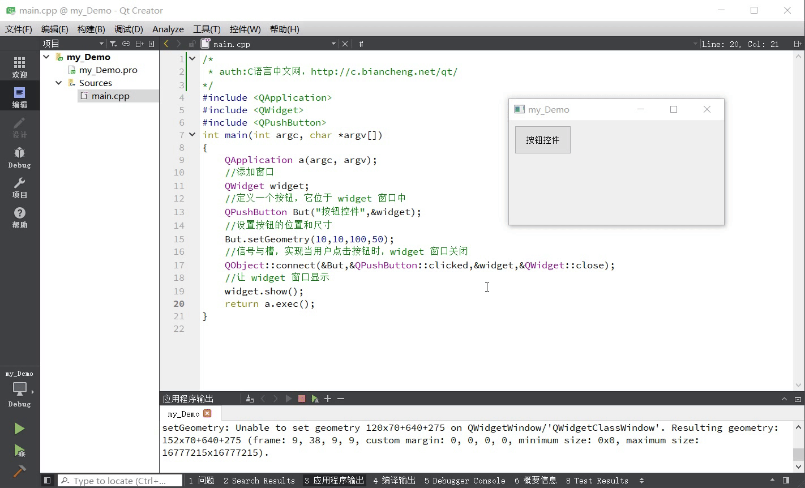

首页 > 编程笔记
Qt控件和事件
Qt 是一个著名的 GUI 框架，用来开发和用户交互的图形界面。作为 GUI 框架，丰富的控件和灵活的事件机制是不可或缺的，Qt 在这一方面做得非常优秀。
为了方便程序员开发，Qt 提供了很多现成的控件。打开某个带 ui 文件的 Qt Widgets Application 项目，ui 文件的 Widget Box 一栏展示了 Qt 提供的几乎所有控件：
图 1 Qt 提供的控件
Qt 中的每个控件都由特定的类表示，每个控件类都包含一些常用的属性和方法，所有的控件类都直接或者间接继承自 QWidget 类。实际开发中，我们可以使用 Qt 提供的这些控件，也可以通过继承某个控件类的方式自定义一个新的控件。
前面说过，Qt 中所有可视化的元素都称为控件，我们习惯将带有标题栏、关闭按钮的控件称为窗口。例如，下图展示了两种常用的窗口，实现它们的类分别是 QMainWindow 和 QDialog。
图 2 Qt 窗口
除了 QMainWindow 和 QDialog 之外，还可以使用 QWidget 类，它的用法非常灵活，既可以用来制作窗口，也可以作为某个窗口上的控件。
窗口很少单独使用，它的内部往往会包含很多控件。例如图 2 中，我们分别往 MainWindow 和 Dialog 窗口中放置了一个按钮控件，根据需要还可以放置更多的控件。当窗口弹出时，窗口包含的所有控件会一同出现；当窗口关闭时，窗口上的所有控件也会随之消失。
《分析第一个Qt程序》一节中提到，Qt 界面程序的 main() 主函数中首先要创建一个 QApplication 类的对象，函数执行结束前还要调用 QApplication 对象的 exec() 函数。一个 Qt 界面程序要想接收事件，main() 函数中就必须调用 exec() 函数，它的功能就是使程序能够持续不断地接收各种事件。
Qt 程序可以接收的事件种类有很多，例如鼠标点击事件、鼠标滚轮事件、键盘输入事件、定时事件等。每接收一个事件，Qt 会分派给相应的事件处理函数来处理。所谓事件处理函数，本质就是一个普通的类成员函数，以用户按下某个 QPushButton 按钮为例，Qt 会分派给 QPushButton 类中的 mousePressEvent() 函数处理。
事件处理函数通常会完成两项任务，分别是：
什么是 Qt 控件
Qt 控件又称组件或者部件，指用户看到的所有可视化界面以及界面中的各个元素，比如按钮、文本框、输入框等。为了方便程序员开发，Qt 提供了很多现成的控件。打开某个带 ui 文件的 Qt Widgets Application 项目，ui 文件的 Widget Box 一栏展示了 Qt 提供的几乎所有控件：
图 1 Qt 提供的控件
Qt 中的每个控件都由特定的类表示，每个控件类都包含一些常用的属性和方法，所有的控件类都直接或者间接继承自 QWidget 类。实际开发中，我们可以使用 Qt 提供的这些控件，也可以通过继承某个控件类的方式自定义一个新的控件。
前面说过，Qt 中所有可视化的元素都称为控件，我们习惯将带有标题栏、关闭按钮的控件称为窗口。例如，下图展示了两种常用的窗口，实现它们的类分别是 QMainWindow 和 QDialog。
图 2 Qt 窗口
- QMainWindow 类生成的窗口自带菜单栏、工具栏和状态栏，中央区域还可以添加多个控件，常用来作为应用程序的主窗口；
- QDialog 类生成的窗口非常简单，没有菜单栏、工具栏和状态栏，但可以添加多个控件，常用来制作对话框。
除了 QMainWindow 和 QDialog 之外，还可以使用 QWidget 类，它的用法非常灵活，既可以用来制作窗口，也可以作为某个窗口上的控件。
窗口很少单独使用，它的内部往往会包含很多控件。例如图 2 中，我们分别往 MainWindow 和 Dialog 窗口中放置了一个按钮控件，根据需要还可以放置更多的控件。当窗口弹出时，窗口包含的所有控件会一同出现；当窗口关闭时，窗口上的所有控件也会随之消失。
实际开发中，制作应用程序的主窗口可以用 QMainWindow 或者 QWdiget；制作一个提示信息的对话框就用 QDialog 或 QWidget；如果暂时无法决定，后续可能作为窗口，也可能作为控件，就选择 QWidget。
什么是Qt事件
简单地理解，Qt 事件指的是应用程序和用户之间的交互过程，例如用户按下某个按钮，点击某个输入框等等。实际上除了用户会与应用程序进行交互外，操作系统也会与应用程序进行交互，例如当某个定时任务触发时，操作系统会关闭应用程序，这也是一个事件。《分析第一个Qt程序》一节中提到，Qt 界面程序的 main() 主函数中首先要创建一个 QApplication 类的对象，函数执行结束前还要调用 QApplication 对象的 exec() 函数。一个 Qt 界面程序要想接收事件，main() 函数中就必须调用 exec() 函数，它的功能就是使程序能够持续不断地接收各种事件。
Qt 程序可以接收的事件种类有很多，例如鼠标点击事件、鼠标滚轮事件、键盘输入事件、定时事件等。每接收一个事件，Qt 会分派给相应的事件处理函数来处理。所谓事件处理函数，本质就是一个普通的类成员函数，以用户按下某个 QPushButton 按钮为例，Qt 会分派给 QPushButton 类中的 mousePressEvent() 函数处理。
事件处理函数通常会完成两项任务，分别是：
- 修改控件的某些属性，比如当用户按下按钮时，按钮的背景颜色会发生改变，从而提示用户已经成功地按下了按钮；
- 运用信号和槽机制处理事件。
创建一个不带 ui 文件的 Qt Widgets Application 项目，项目中只保留一个 main.cpp 源文件，删除其它文件（mainwindows.h 和 mainwindow.cpp）。将下述代码直接拷贝到 main.cpp 文件：信号和槽是 Qt 中处理事件最常用的方法，我们会在《Qt信号和槽》一节中做详细地讲解。
//main.cpp
#include <QApplication>
#include <QWidget>
#include <QPushButton>
int main(int argc, char *argv[])
{
QApplication a(argc, argv);
//添加窗口
QWidget widget;
//定义一个按钮，它位于 widget 窗口中
QPushButton But("按钮控件",&widget);
//设置按钮的位置和尺寸
But.setGeometry(10,10,100,50);
//信号与槽，实现当用户点击按钮时，widget 窗口关闭
QObject::connect(&But,&QPushButton::clicked,&widget,&QWidget::close);
//让 widget 窗口显示
widget.show();
return a.exec();
}
运行结果如下图所示：

图 3 运行结果
整个程序的运行过程如下：
图 3 运行结果
- 先创建了一个 QWidget 窗口，在窗口上添加一个 QPushButton 按钮；
- 当用户点击按钮时，Qt 会将此事件分派给 QPushButton 类的 mousePressEvent() 事件处理函数；
- mousePressEvent(）函数内部会改变按钮的属性，提示用户成功按下了按钮，还会调用 clicked() 函数发出“用户点击按钮”的信号。对于发出的信号，程序中调用 connect() 函数指定 QWidget 类的 close() 函数接收 clicked() 信号，close() 函数会关闭 widget 窗口。
总结
实际开发中，我们用各种 Qt 控件设计出功能丰富的界面，用 Qt 事件完成与用户的交互。学习 Qt 界面编程，本质上就是学习 Qt 各个控件的用法以及对 Qt 事件的处理。本节我们只是对 Qt 控件和事件做了简单的了解，接下来将为您系统地讲解它们的用法。关注公众号「站长严长生」，在手机上阅读所有教程，随时随地都能学习。内含一款搜索神器，免费下载全网书籍和视频。

微信扫码关注公众号